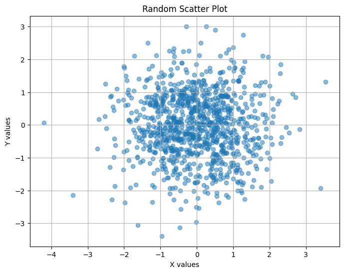

Test Notebook
[1]:
import numpy as np
import matplotlib.pyplot as plt
# Generate random data
x = np.random.randn(1000)
y = np.random.randn(1000)
# Create scatter plot
plt.figure(figsize=(8, 6))
plt.scatter(x, y, alpha=0.5)
plt.title('Random Scatter Plot')
plt.xlabel('X values')
plt.ylabel('Y values')
plt.grid(True)
plt.show()

[ ]: